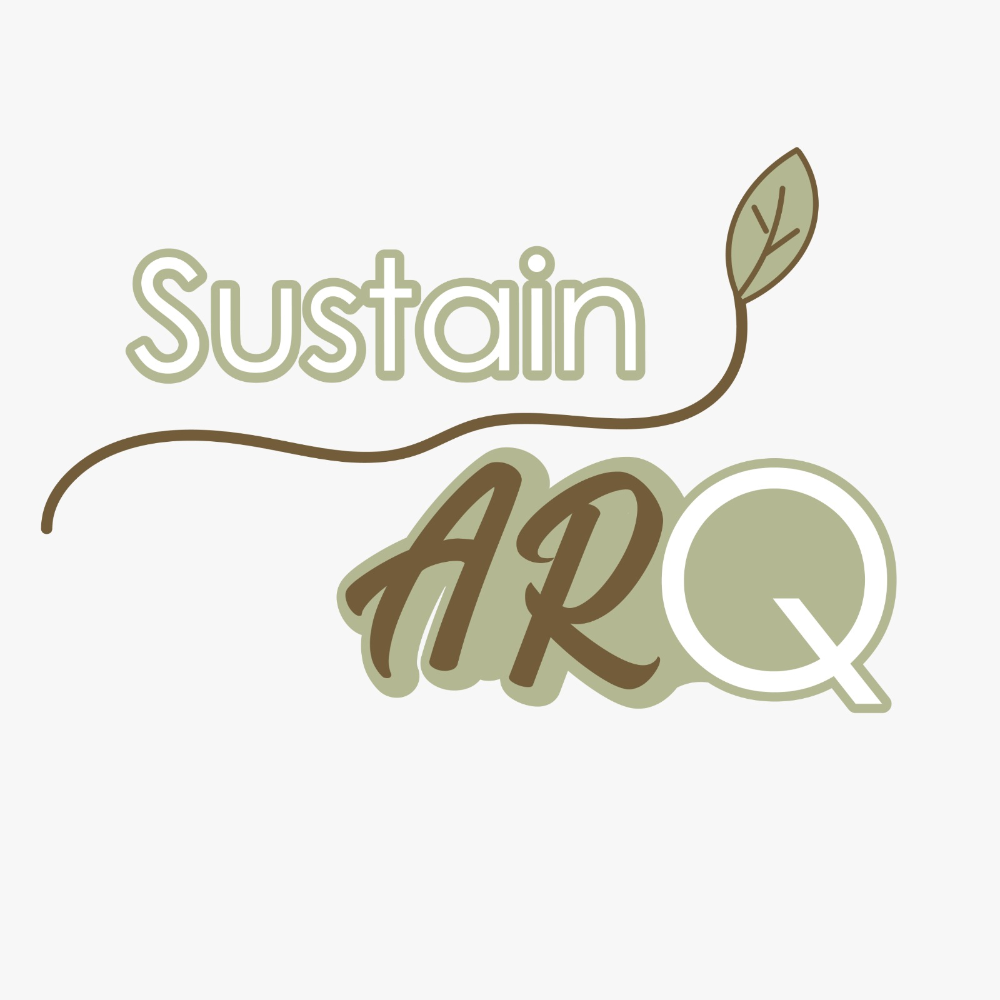
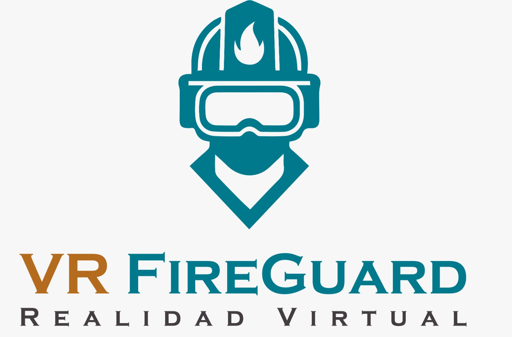

// SUSTAIN ARQ (REALIDAD AUMENTADA) //
Plataforma AR para visualización arquitectónica sustentable. Permite a usuarios proyectar modelos BIM optimizados en entornos reales con análisis de impacto ambiental.
Arquitecto de experiencias interactivas y sistemas escalables para un futuro digital y sustentable.
INICIAR PORTAFOLIOSoy Jared de Esaii Cuellar Peña, un Ingeniero de Sistemas con un enfoque en la intersección entre el desarrollo web y las tecnologías inmersivas (AR/VR).
Mi trabajo se centra en diseñar arquitecturas de software que no solo son robustas y eficientes (Full-Stack), sino que también ofrecen experiencias de usuario innovadoras, aplicando principios de sustentabilidad y seguridad en cada línea de código.

Plataforma AR para visualización arquitectónica sustentable. Permite a usuarios proyectar modelos BIM optimizados en entornos reales con análisis de impacto ambiental.

Simulador de entrenamiento en realidad virtual para protocolos de seguridad contra incendios. Desarrollado en Unity para capacitación inmersiva y medición de rendimiento.
Aplicación interactiva 3D desarrollada en Unity y estructurada por niveles. Diseñada para el ámbito académico, simula la gestión de recursos energéticos y provee información didáctica para la toma de decisiones sustentables y el aprendizaje práctico.
Si buscas un perfil técnico para un proyecto desafiante de desarrollo web o XR, hablemos de la arquitectura.